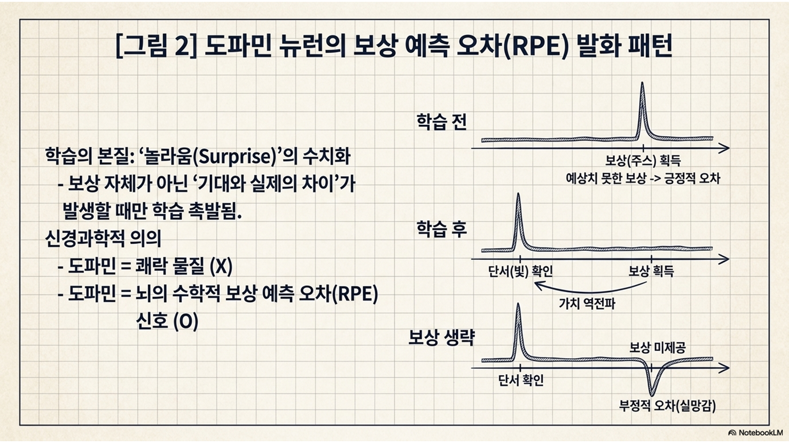
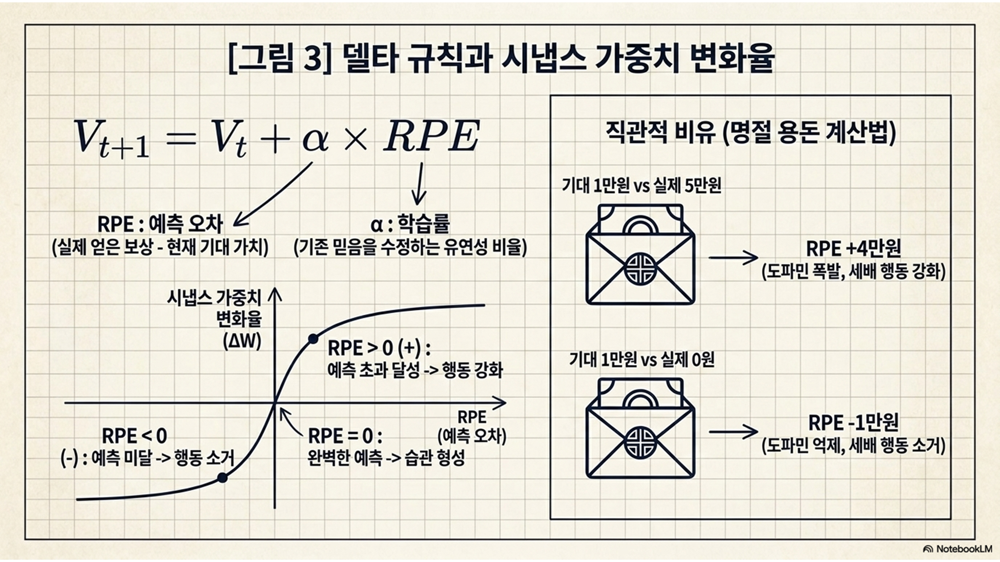
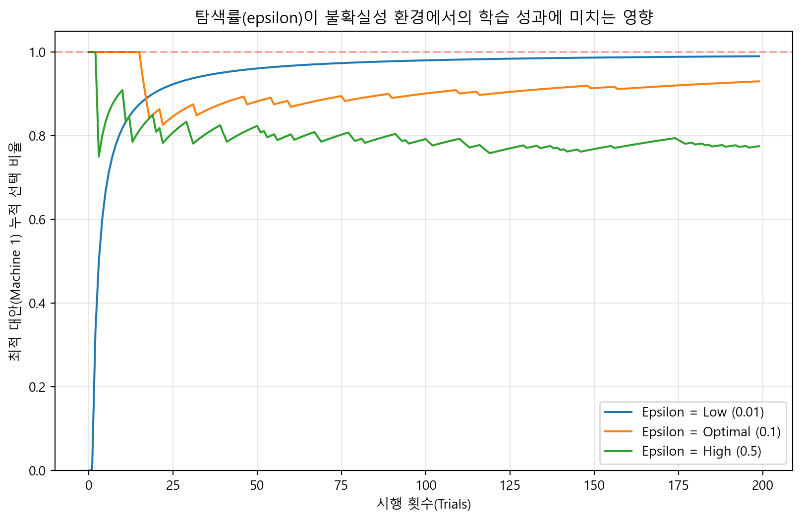
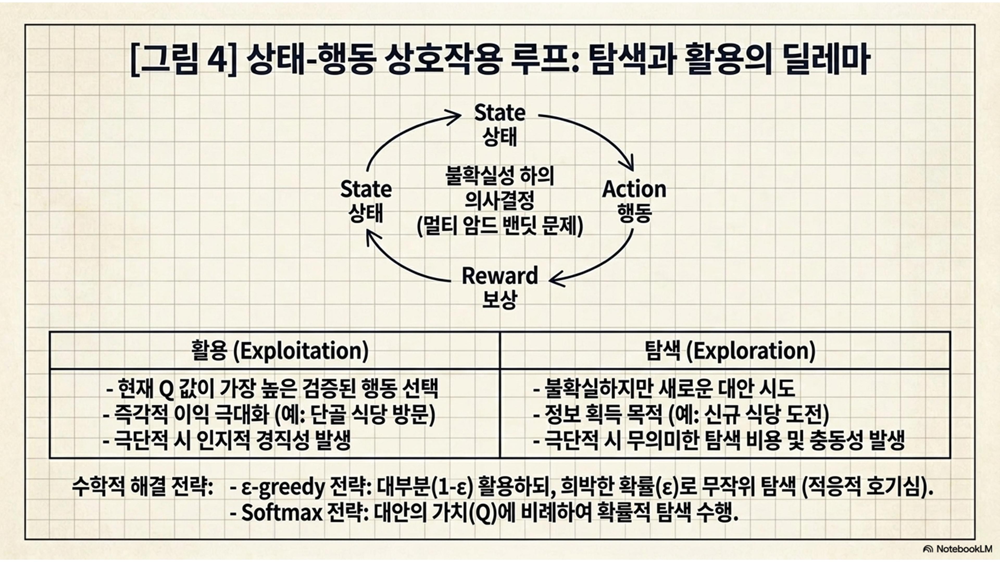
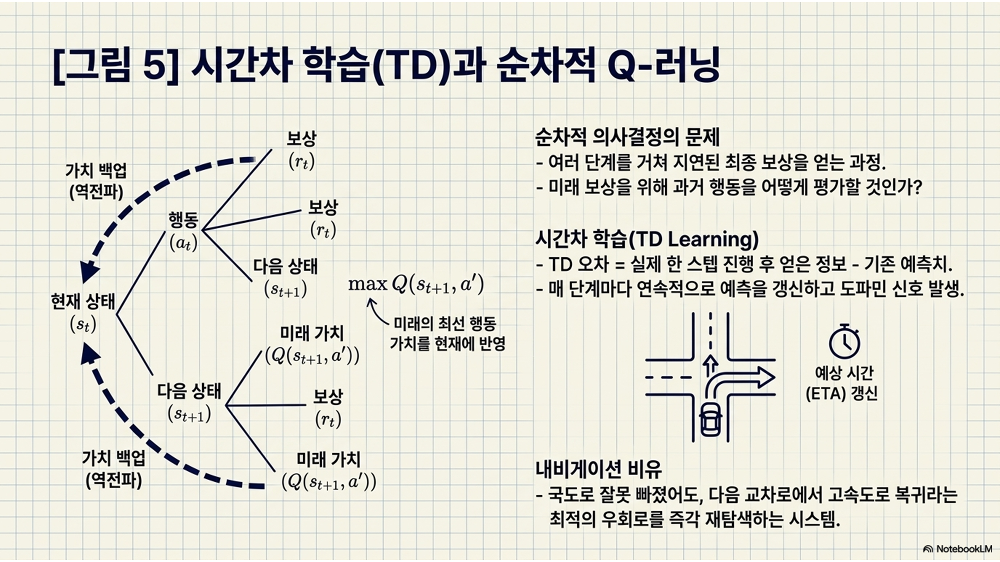
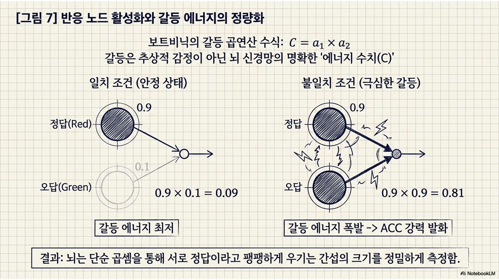
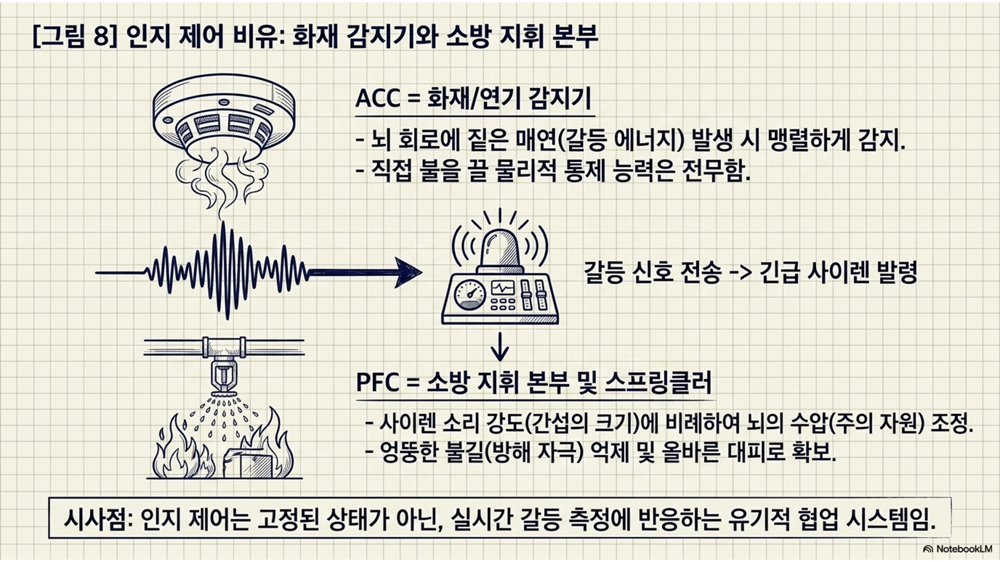
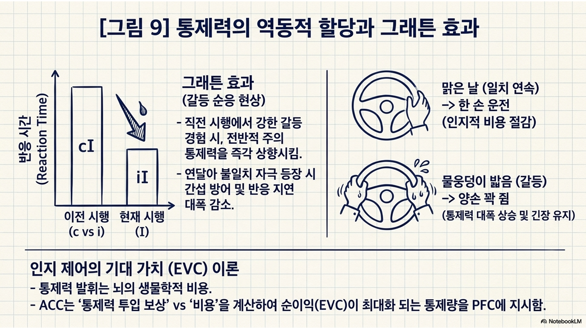
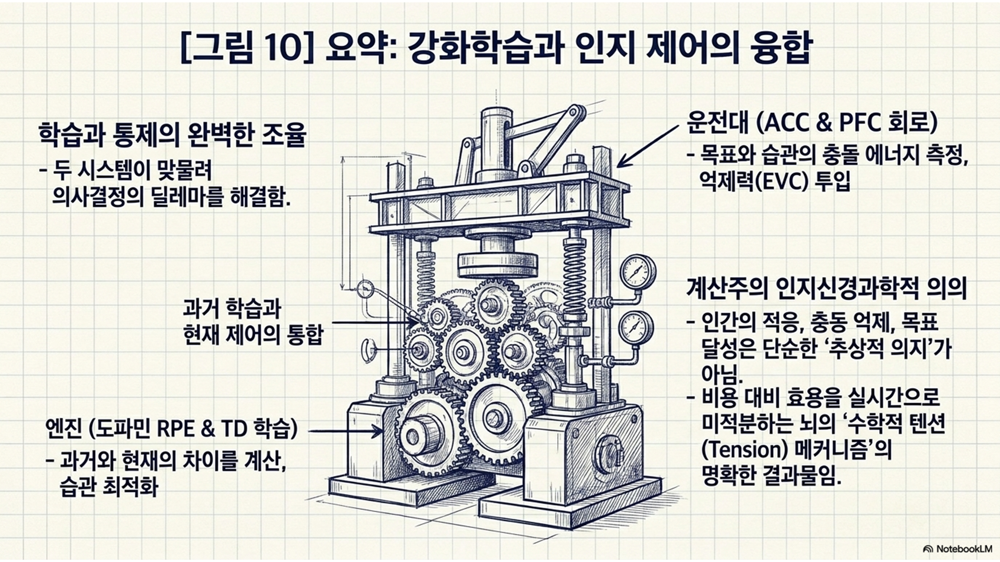

보상 예측 오차(reward prediction error, RPE)의 생물학적 메커니즘 이해: 중뇌 도파민 시스템이 어떻게 외부의 보상 자체를 학습하는 것이 아니라 예측과 실제의 차이를 수치화하여 학습을 주도하는지 이해함.
순차적 의사결정과 Q-러닝 구현: 한정된 정보 속에서 유기체가 탐색(exploration)과 활용(exploitation)의 딜레마를 어떻게 해결하는지 Q(quaility)-러닝 알고리즘을 통해 파이썬으로 직접 구현함.
갈등 모니터링과 인지 제어의 수치화: 본능적 습관과 현재 목표가 충돌할 때, 전대상피질(anterior cingulate cortex, ACC)이 갈등을 감지하고 배외측 전전두피질(dorsolateral prefrontal cortex, dlPFC)이 통제력을 할당하는 과정을 에너지 함수로 정량화함.
통제력의 기대 가치(expected value of control, EVC) 이론 체화: 뇌가 인지적 노력을 비용으로 인식하고, 보상 대비 최적의 통제 강도를 할당하여 그래튼 효과(Gratton effect)를 만들어내는 과정을 시뮬레이션함.
1부: 강화학습과 가치 기반 의사결정
1.1 보상 예측 오차와 뇌의 학습 메커니즘
이론적 설명
유기체의 학습은 단순히 외부에서 보상이 주어졌을 때 수동적으로 일어나는 것이 아님. 계산주의 인지과학에 따르면 학습은 오직 ’기대했던 예측과 실제 결과 사이의 차이(surprise)’가 발생했을 때만 촉발됨.
볼프람 슐츠(Wolfram Schultz)의 원숭이 실험
실험 개요: 1997년 슐츠 연구팀이 원숭이에게 특정 단서(빛이나 소리)를 준 뒤 주스(보상)를 제공하며, 뇌 속 도파민 뉴런의 활성화 패턴을 측정한 신경과학 실험.
실험의 3단계 핵심 결과
학습 전(예상치 못한 보상): 아무 단서 없이 갑자기 주스가 주어지면, 주스를 맛보는 ’보상 시점’에 도파민 뉴런이 강하게 발화함.
학습 후(보상 예측의 형성): ‘단서 \(\rightarrow\) 보상’ 패턴을 학습하고 나면, 정작 주스를 마실 때가 아니라 ’최초 단서(conditional stimulus, CS)가 주어지는 시점’에 미리 도파민이 발화함. \(\Rightarrow\) 가치의 역전파.
보상 생략(부정적 예측 오차): 단서를 제시하여 도파민이 미리 분비되었는데 정작 기대했던 주스를 주지 않으면, 원래 보상이 주어졌어야 할 시점에 도파민 활성도가 기본치 이하로 급격히 뚝 떨어짐. \(\Rightarrow\) 실망감의 수치화.
인지과학적 의의
도파민이 단순히 ’기쁨’을 느끼게 하는 쾌락 물질이 아니라, 뇌가 환경을 학습할 때 “내 예측이 얼마나 빗나갔는가”를 계산하는 보상 예측 오차(reward prediction error, RPE) 신호 그 자체임을 생물학적으로 증명함.
뇌의 중뇌 복측피개영역(ventral tegmental area, VTA)과 흑질(substantia nigra)에 밀집된 도파민 뉴런이 정확히 이 보상 예측 오차를 실시간으로 계산하여 대뇌피질 전체로 쏘아보내는 핵심 학습 신호 전달자임을 증명함.
아무런 기대가 없는 상태에서 예상치 못한 긍정적 보상이 주어지면 도파민 발화가 급증(positive RPE)하여 해당 행동의 시냅스를 강화함. 반면, 빛이나 소리 같은 단서를 통해 보상을 이미 완벽히 예측했다면, 실제 보상이 주어지는 시점에는 도파민이 베이스라인을 유지하며 침묵함(이미 다 아는 정보이므로 추가 학습 불필요).
[그림 2] 중뇌 도파민 뉴런의 보상 예측 오차 발화 패턴을 보여주는 슐츠의 고전적 실험 데이터

심화 해설(RPE의 수학적 공식과 델타 규칙)
생물학적인 뇌의 도파민 RPE 신호는 인지심리학의 고전적 연합 학습 방정식인 ’레스콜라-와그너(Rescorla-Wagner) 모델’의 구조와 완벽하게 일치함.
레스콜라-와그너 모델
정의: 1972년 로버트 레스콜라(Robert Rescorla)와 앨런 와그너(Allan Wagner)가 제안한 동물 연합 학습(고전적 조건화)의 수학적 모델. 동물의 학습은 두 자극의 단순한 시간적 인접성에 의해 기계적으로 일어나는 것이 아니라, 결과에 대한 ’놀라움(surprise, 예측 오차)’이 발생했을 때만 촉발된다고 설명함.
핵심 방정식: \(\Delta V = \alpha \beta (\lambda - \Sigma V)\)
\(\Delta V\): 특정 자극에 대한 연합 강도(예측 가치)의 변화량. \(\Rightarrow\) 오늘 한 번의 경험(학습)을 통해 그 믿음이 어제보다 얼마나 더 커지거나 작아졌는가(변화량)?
\(V\): Value(가치)의 이니셜. 뇌가 특정 단서(예: 종소리)에 부여한 ’주관적인 기대 가치’를 뜻함. \(\Rightarrow\) 종소리(단서)를 들으면 고기(보상)가 나올 것이라는 뇌 속의 강력한 믿음.
연합 강도: ‘단서(예: 종소리)’와 ’실제 보상(예: 고기)’ 사이의 끈끈한 연결 고리를 뜻함. \(\Rightarrow\) 종소리를 들었을 때 뇌가 고기를 얼마나 강력하게 짝지어 떠올리는지, 그 두 기억 사이의 연결된 정도(연합[association]).
예측 가치: 단서를 보고 ’곧 다가올 미래의 보상(예: 고기)이 얼마나 클지 혹은 주어질 확률이 얼마나 될지’를 미리 점치는 것. \(\Rightarrow\) “이 종소리가 울렸으니, 3초 뒤에 맛있는 고기가 떨어질 것이다!”라고 뇌가 미리 계산해둔 기대치(예측치).
\(\alpha\)
정의: 조건 자극(단서)의 두드러짐을 나타내는 학습률 파라미터.
예: 시계의 째깍거리는 작은 소리(낮은 \(\alpha\)) vs 눈앞에서 번쩍이는 천둥번개(높은 \(\alpha\)).
\(\beta\)
정의: 무조건 자극(보상)의 두드러짐을 나타내는 학습률 파라미터.
예: 밍밍한 물 한 모금(낮은 \(\beta\)) vs 입안이 얼얼할 정도로 달콤한 초콜릿(높은 \(\beta\)).
자극의 두드러짐과 학습률 간의 관계
뇌는 강렬하고 존재감이 큰 자극일수록 더 집중해서 빠르게 배움.
느린 학습률: 자극들이 희미하면(\(\alpha, \beta\)가 낮으면), 뇌는 “이게 중요한 건가?” 하고 시큰둥하게 반응하며 수십 번을 겪어봐야 겨우 조금 배움.
빠른 학습률: 자극들이 강렬하면(\(\alpha, \beta\)가 높으면), 뇌는 엄청난 임팩트를 받아 단 한 번의 경험만으로도 머릿속의 기대치(\(V\))를 대폭 업데이트함.
\(\lambda\): 환경으로부터 실제 주어진 보상의 최대 크기.
\(\Sigma V\): 현재 유기체가 머릿속으로 예측하고 있는 총 보상 기대치.
\((\lambda - \Sigma V)\): 실제 보상과 예측의 격차. \(\Rightarrow\)예측 오차.
주요 인지 현상(차단 효과): 이미 ’종소리’만으로 먹이를 100% 예측하게 된 개(\(\Sigma V = \lambda\), 오차가 0인 상태)에게 ’종소리+불빛’을 동시에 제시하며 먹이를 주어도, 개는 새로운 단서인 ’불빛’에 대해서는 학습(\(\Delta V\))을 하지 않음. 예측과 실제가 이미 일치하여 오차가 없으므로 뇌가 추가적인 연합을 맺을 이유가 없기 때문임.
계산주의 인지신경과학적 의의: 1970년대 행동주의 심리학에서 순수하게 수학적으로 추론된 이 학습 방정식은, 훗날 슐츠가 발견한 중뇌 도파민 뉴런의 발화 메커니즘(RPE)과 생물학적으로 완벽하게 일치함이 증명됨.
\(RPE = R_t - V_t\): RPE는 현재 시점(\(t\))에서 실제 얻은 보상(\(R_t\))에서 현재 뇌가 머릿속으로 기대했던 가치(\(V_t\))를 뺀 수학적 차이로 정의됨.
\(V_{t+1} = V_t + \alpha \times RPE\)
뇌가 다음번의 기대치(\(V_{t+1}\))를 정할 때, 오늘 예측이 빗나간 충격(RPE)을 바탕으로 기존에 갖고 있던 믿음(\(V_t\))을 수정하는 과정임.
이때 오차를 무작정 100% 다 반영하여 곧바로 생각을 확 바꾸는 것이 아니라, 새로운 정보를 얼마나 유연하게 수용할지 결정하는 뇌의 고집 꺾기(학습률, \(\alpha\)) 비율만큼만 반영하여 점진적으로 현실 감각을 업데이트함.
이 델타 규칙 수식에 따르면, 오차가 양수(+)이면 다음번 행동의 가치가 증가하고, 오차가 음수(-)이면 가치가 하락함. 궁극적으로 예측과 실제가 완벽히 일치하여 오차가 0이 될 때(\(R_t = V_t\)), 가중치 갱신(학습)이 종료되고 완벽한 습관이 형성됨.
[그림 3] 긍정적/부정적 예측 오차 크기에 따른 시냅스 가중치(연결 강도) 변화율의 비선형 곡선

비유(명절 용돈과 도파민의 기대치 계산법)
명절에 친척 어른이 내게 용돈을 1만 원 주실 것으로 굳게 기대(\(V=10000\))하고 정성껏 세배를 했다고 가정함.
만약 봉투에 5만 원이 들어있었다면(\(R=50000\)), 뇌 속의 RPE는 +40000이 되어 도파민이 폭발적으로 분비됨(긍정적 놀라움). 이 강력한 신경화학적 쾌감은 “다음 명절에도 반드시 가장 먼저 달려가 이 어른께 세배를 해야겠다”는 강력한 ’행동 강화’를 유발함.
반대로 봉투가 텅 비어 있었다면(\(R=0\)), RPE는 -10000이 됨. 도파민 수치가 바닥을 치며 극심한 실망감과 불쾌감을 느끼고, “다음 명절에는 절대 세배를 하지 않겠다”는 ’행동 소거’가 발생함. 우리의 뇌는 이렇듯 철저히 주관적 기대치와의 격차(오차)를 수학적으로 계산하여 세상의 법칙을 업데이트하는 고도의 회계사와 같음.
1.2 탐색과 활용의 딜레마
이론적 설명
유기체가 불확실한 환경에서 최적의 의사결정을 내리기 위해서는 탐색(exploration)과 활용(exploitation) 사이의 본질적인 딜레마를 반드시 해결해야 함.
활용
Q 값(Q-value): 특정 상태(state)에서 특정 행동(action)을 선택했을 때 미래에 얻게 될 누적 보상의 총 기대치를 수치화한 값.
현재까지의 학습 경험을 바탕으로 기대 가치(Q 값)가 가장 높다고 판단되는 행동을 선택하여 즉각적인 보상을 극대화하는 보수적 전략임.
탐색: 현재 최고라고 생각되지는 않지만, 정보가 부족한 대안을 의도적으로 시도하여 환경에 대한 새로운 지식을 습득하는 진취적 전략임.
환경이 정적이지 않고 변화하거나 정보가 불완전할 때, 지나친 활용은 유기체를 ’지역 최적해(local optimum)’에 갇히게 만들고, 지나친 탐색은 이미 확보한 보상 획득의 기회를 무의미하게 낭비하게 만듦.
심화 해설(행동 선택 알고리즘의 수식화)
계산주의 인지 모델에서는 유기체가 이 딜레마를 어떻게 수학적으로 해결하는지 설명하기 위해 주로 두 가지 알고리즘을 사용함.
\(\epsilon\)-greedy(입실론-그리디) 전략
입실론(\(\epsilon\))
개념적 정의: \(\epsilon\)은 유기체가 의사결정을 내릴 때, 과거의 경험(Q-value)을 전적으로 신뢰하지 않고 의도적으로 무작위 대안을 시도해보는 ’탐색 확률’을 의미함.
수치적 의미: 0과 1 사이의 확률값을 가짐.
\(\epsilon = 0\): 탐색 확률 0%. 오직 자신이 아는 최고 가치의 행동만 반복하는 극단적 ‘활용’ 상태. \(\Rightarrow\) 인지적 경직성, 보수성.
\(\epsilon = 1\): 탐색 확률 100%. 과거의 학습을 전혀 참고하지 않고 매번 아무 대안이나 충동적으로 선택하는 상태. \(\Rightarrow\) 극단적 산만함, 충동성.
\(\epsilon = 0.1\): 90%의 상황에서는 경험에 의존하여 최적의 선택을 하고, 10%의 여유를 두어 새로운 가능성을 찔러보는 상태. \(\Rightarrow\) 일반적으로 환경 변화에 대처하는 가장 ‘적응적인’ 수치로 간주됨.
인지과학적 비유(호기심의 정량화): 우리가 매일 점심을 먹을 때, 10번 중 9번은 실패 확률이 없는 검증된 단골 식당에 가지만(활용), 1번 정도는 맛이 없을 위험을 감수하더라도 새로 개업한 식당에 도전해보는(탐색) 인간의 ’적응적 호기심’을 컴퓨터 수식으로 치환한 것임.
가장 직관적인 행동 선택 모델: 대부분의 상황(\(1-\epsilon\)의 확률)에서는 과거의 경험을 전적으로 신뢰하여 Q 값이 가장 높은 행동을 선택(활용)하지만, 아주 작은 확률(\(\epsilon\))로 무작위 대안을 찔러봄(탐색).
각 대안의 Q 값에 비례하여 선택 확률을 할당하므로, 차선책들 사이에서도 더 가치 있는 것을 우선적으로 탐색함. 여기서 매개변수 \(\tau\)는 유기체의 탐색 성향을 통제함.
타우(\(\tau\))
\(\tau\) = 무한대: 완전한 무작위 탐색(충동성)이 됨.
\(\tau\) = 0: 철저한 활용(경직성) 상태가 됨.
비유(단골 식당과 신규 식당)
매일 점심시간마다 늘 가던 검증된 단골 식당(활용)에 갈 것인가, 아니면 맛이 없을지도 모르는 새로 개업한 식당(탐색)에 도전할 것인가의 문제와 완벽히 같음.
만약 이 동네에 앞으로 10년을 더 살아야 한다면(충분한 시간적 여유 및 학습 기회), 초반에 맛없는 식사를 할 위험을 감수하더라도 다양한 식당을 탐색해두는 것이 장기적인 누적 만족도를 극대화하는 합리적 결정임.
[실습 1-1] 멀티 암드 밴딧 탐색 전략 비교 시뮬레이션
멀티 암드 밴딧과 Q-러닝의 결합
멀티 암드 밴딧(multi-armed bandit, MAB) 문제
정의: ’밴딧(bandit)’은 카지노의 슬롯머신을 뜻하며, ’멀티 암드(multi-armed)’는 손잡이가 여러 개 달려 있다는 의미.
인지적 함의: 유기체가 각기 다른(그리고 처음에는 전혀 모르는) 보상 확률을 가진 여러 대안 중에서, 어떤 것을 선택해야 장기적인 누적 보상을 극대화할 수 있는지 묻는 고전적인 ‘불확실성하의 의사결정’ 패러다임.
Q-러닝
정의: 밴딧 문제의 해결책으로, 유기체가 각 손잡이(선택지)를 당겼을 때 얻을 수 있는 기대 가치(Q-value)를 학습해나가는 알고리즘.
과정: 머신을 당겨서 예상 외의 보상을 받으면 도파민이 분비되어(+RPE) 해당 선택지의 Q 값을 높이고, 예상과 달리 꽝이 나오면 도파민이 억제되어(-RPE) Q 값을 낮추는 델타 규칙의 직접적인 시뮬레이션.
탐색 전략
정의
MAB 환경에서 활용과 탐색 사이에서 발생하는 갈등을 해결하는 규칙. \(\Rightarrow\) 현재까지 학습된 Q 값이 가장 높은 기계만 계속 당길 것인가(활용), 아니면 더 좋은 기계가 있을지도 모르니 확률이 낮아 보이는 다른 기계를 당겨볼 것인가(탐색)?
활용 vs 탐색
우물 안 개구리: ’활용’만 하면 당장의 수익은 확실하지만, 더 큰 대박(진짜 최적의 정답)을 영원히 놓칠 우려가 있음.
극단적 충동성: ’탐색’만 하면 새로운 정보를 얻을 수는 있지만, 꽝을 뽑는 실패 비용이 누적되어 결국 생존(총 보상)에 실패함.
구현: 실습 코드에서는 \(\epsilon\)이라는 탐색 확률 변수를 두어, 이 딜레마를 수학적으로 통제하고 유기체의 ’적응적 호기심’을 구현.
Code
# =========================================================================# [실습 1-1] 멀티 암드 밴딧 Q-러닝 및 탐색 전략 통합 시뮬레이션# 1) 단일 피험자가 예측 오차(RPE)를 통해 가치를 학습하는 과정을 확인하고,# 2) 동시에 탐색률(epsilon)이 학습 성과에 미치는 영향을 시각적으로 비교함.# =========================================================================# 배열 계산 및 행렬 연산을 지원하는 파이썬 표준 과학 라이브러리를 np라는 이름으로 불러옴.import numpy as np# 시뮬레이션 결과의 시각화(학습 곡선 그래프)를 위해 matplotlib.pyplot을 plt라는 이름으로 불러옴.import matplotlib.pyplot as plt# =========================================================# [운영체제별 한글 폰트 자동 설정] # 수강생들의 OS(윈도우 vs 맥)가 달라도 코드가 알아서 호환되도록 설정함.import platformif platform.system() =='Windows': plt.rcParams['font.family'] ='Malgun Gothic'# 윈도우 사용자elif platform.system() =='Darwin': plt.rcParams['font.family'] ='AppleGothic'# 맥 사용자else: plt.rcParams['font.family'] ='NanumGothic'# 리눅스 등 기타plt.rcParams['axes.unicode_minus'] =False# 마이너스(-) 기호 깨짐 방지# =========================================================# 시뮬레이션을 반복 실행하더라도 항상 동일한 난수 패턴이 나오도록 시드를 42로 고정함. # 이는 실험 결과의 완벽한 재현성을 확보하기 위함임.np.random.seed(42)# --- 1. 인지 환경 및 하이퍼파라미터 설정 ---# 피험자가 두 슬롯머신 중 하나를 선택하는 시행(trial)의 총 횟수를 200회로 설정함.n_trials =200# 학습률(alpha): 도파민 예측 오차(RPE)를 다음번 시냅스 가중치 갱신에 얼마나 반영할지 결정함(15%).alpha =0.15# 외부 환경의 객관적 법칙: 머신 0을 당기면 30%, 머신 1을 당기면 80% 확률로 보상(1)이 주어지도록 통제함.true_probs = [0.3, 0.8] # 세 명의 각기 다른 행동 탐색 성향을 가진 피험자의 탐색 확률(epsilon)을 딕셔너리로 정의함.epsilons = {'Low (0.01)': 0.01, # 보수적 성향: 단 1%의 확률로만 낯선 대안을 탐색하고 기존 경험에 집착함.'Optimal (0.1)': 0.1, # 적응적 성향: 10%의 확률로 탐색하며 환경 불확실성에 유연하게 대처함.'High (0.5)': 0.5# 충동적 성향: 50%의 확률로 무작위 탐색을 남발하여 보상 획득 기회를 낭비함.}# 각 피험자가 시간에 따라 최적 대안(머신 1)을 선택한 누적 비율을 저장할 빈 딕셔너리를 초기화함.optimal_choice_rates = {}# 모든 200회 시행이 끝난 후 각 피험자가 머릿속에 형성한 최종 기대치(Q-value)를 보관할 딕셔너리임.final_q_values = {} # --- 2. 피험자 성향별 Q-러닝 강화학습 루프 가동 ---# 앞서 정의한 3명의 피험자 조건에 대해 각각 독립적인 뇌 시뮬레이션을 반복 수행함.for label, epsilon in epsilons.items():# 피험자의 뇌 속 초기 기대치: 머신 0과 머신 1에 대한 사전 경험이 없으므로 가치를 모두 0.5로 평등하게 초기화함. Q_values = np.array([0.5, 0.5]) # 매 시행마다 피험자가 객관적 최적 대안(1)을 선택했는지, 오답(0)을 선택했는지 시간 순으로 기록할 빈 리스트임. choices = []# 정해진 총 시행 횟수(200회)만큼 순차적인 의사결정-보상-학습의 루프를 반복함.for t inrange(n_trials):# [행동 선택 단계: 탐색 vs 활용]# 0.0과 1.0 사이의 난수를 뽑아 피험자 고유의 탐색 확률(epsilon)과 비교하거나, # 혹은 뇌 속의 두 머신에 대한 기대치가 완전히 똑같을 경우 의도적인 탐색을 실행함.if np.random.rand() < epsilon or Q_values[0] == Q_values[1]:# 탐색: 과거의 Q 값을 완전히 무시하고 머신 0과 1 중 동전 던지기로 무작위 대안을 찔러봄. action = np.random.choice([0, 1]) else:# 활용: 현재 뇌(Q_values)가 기억하는 가장 기대치가 높은(argmax) 머신을 확실하게 선택함. action = np.argmax(Q_values) # 에이전트가 이번 시행에서 선택한 행동(action)이 80%짜리 정답 머신인지 판별하여 1 또는 0으로 치환함. is_optimal =1if action ==1else0# 판별된 정답 여부를 choices 리스트의 맨 끝에 추가하여 행동 궤적을 누적함. choices.append(is_optimal)# [환경의 피드백 및 도파민 RPE 계산 단계]# 선택한 머신(action)의 실제 보상 확률(true_probs)을 바탕으로 가상의 당첨(1) 또는 꽝(0) 결과를 생성함. reward =1if np.random.rand() < true_probs[action] else0# 보상 예측 오차(RPE): 외부에서 얻은 '실제 보상'에서 내가 머릿속으로 '기대했던 가치(Q)'를 뺀 순수 오차값임. rpe = reward - Q_values[action]# [머릿속 기대치 수정: 델타 규칙 적용]# 방금 한 행동으로 얻은 충격(오차)과 나의 유연성(학습률)을 바탕으로 해당 행동에 대한 기존의 믿음(Q-value)을 현실에 맞게 갱신함. Q_values[action] = Q_values[action] + (alpha * rpe)# 해당 피험자가 1회부터 200회까지 선택한 정답 누적 횟수(cumsum)를 현재 시행 횟수 배열로 나누어 이동 평균을 구함. cumulative_optimal_rate = np.cumsum(choices) / np.arange(1, n_trials +1)# 계산된 누적 정답률 배열을 피험자 이름(label)에 매핑하여 최종 딕셔너리에 저장함. optimal_choice_rates[label] = cumulative_optimal_rate# 200회의 훈련이 끝난 후, 뇌 속 신경망에 맺힌 최종 Q 값 배열을 복사(.copy())하여 저장함. final_q_values[label] = Q_values.copy()# --- 3. 결과 출력 및 시각화 ---# [1.1 섹션 목표] 도파민 오차 신호가 유기체의 주관적 가치를 객관적 환경 확률에 맞게 수렴시켰는지 확인.print("=== Q-value 학습 결과 (가치 업데이트) ===")print(f"Optimal(0.1) 에이전트 최종 기대치 - Machine 0: {final_q_values['Optimal (0.1)'][0]:.2f}, Machine 1: {final_q_values['Optimal (0.1)'][1]:.2f}")print("-> 해석: 델타 규칙을 통해 각 머신의 실제 당첨 확률(0.3, 0.8)에 근접하게 기대치를 성공적으로 업데이트함.\n")# [1.2 섹션 목표] 탐색과 활용 딜레마를 시각화하기 위해 가로 10, 세로 6 크기의 도화지를 생성함.plt.figure(figsize=(10, 6))# 3명의 에이전트가 보여준 누적 정답률 궤적을 꺾은선 그래프로 차례대로 그려냄.for label, rate in optimal_choice_rates.items(): plt.plot(rate, label=f'Epsilon = {label}')# 시각적 지침을 위해 완벽한 학습 상태인 정답률 100%(y=1.0) 위치에 붉은 점선을 추가함.plt.axhline(y=1.0, color='r', linestyle='--', alpha=0.3)# 그래프의 제목, x축 라벨, y축 라벨을 인지과학적 맥락에 맞게 부여함.plt.title('탐색률(epsilon)이 불확실성 환경에서의 학습 성과에 미치는 영향')plt.xlabel('시행 횟수(Trials)')plt.ylabel('최적 대안(Machine 1) 누적 선택 비율')# y축의 상하단 범위를 0에서 1.05로 고정하여 여백을 확보함.plt.ylim(0, 1.05)# 각 선이 어떤 탐색률 조건인지 구별할 수 있도록 범례를 활성화함.plt.legend()# 데이터의 추세를 쉽게 파악할 수 있도록 배경에 연한 격자무늬를 추가하고 화면에 출력함.plt.grid(True, alpha=0.3)plt.show()# 그래프의 패턴이 가지는 인지과학적 의의를 텍스트로 요약 출력함.print("=== 탐색 전략 비교 해석 ===")print("- 탐색 부족(0.01): 초반에 운 좋게 당첨된 오답(머신 0)에 갇혀 지역 최적해에 빠질 위험이 큼.")print("- 탐색 과도(0.5): 최적 대안을 이미 찾았음에도 자꾸 불필요한 모험을 하느라 누적 보상이 지속적으로 누수됨.")print("- 적절한 탐색(0.1): 10%의 여유를 통해 가장 빠르고 안정적으로 환경을 파악하고 최적의 대안으로 수렴함.")
=== Q-value 학습 결과 (가치 업데이트) ===
Optimal(0.1) 에이전트 최종 기대치 - Machine 0: 0.39, Machine 1: 0.69
-> 해석: 델타 규칙을 통해 각 머신의 실제 당첨 확률(0.3, 0.8)에 근접하게 기대치를 성공적으로 업데이트함.

=== 탐색 전략 비교 해석 ===
- 탐색 부족(0.01): 초반에 운 좋게 당첨된 오답(머신 0)에 갇혀 지역 최적해에 빠질 위험이 큼.
- 탐색 과도(0.5): 최적 대안을 이미 찾았음에도 자꾸 불필요한 모험을 하느라 누적 보상이 지속적으로 누수됨.
- 적절한 탐색(0.1): 10%의 여유를 통해 가장 빠르고 안정적으로 환경을 파악하고 최적의 대안으로 수렴함.
1.3 시간차 학습과 Q-러닝의 순차적 의사결정
이론적 설명
순차적 의사결정(sequential decision making)의 딜레마: 파블로프의 개처럼 단일 자극에 즉각적인 보상이 주어지는 단순 환경과 달리, 현실의 유기체는 미로 탐색이나 장기적 인생 설계처럼 수많은 갈림길을 거쳐야만 지연된 최종 보상을 얻음. 이때 ’최종 보상에 기여한 과거의 연쇄적인 행동들을 어떻게 평가할 것인가’를 해결하기 위해 뇌가 진화시킨 계산 메커니즘이 시간차 학습(temporal difference learning)과 Q-러닝임.
시간차 학습과 순차적 가치 예측:
정의: 순차적 경로에서 ‘직전에 예상했던 가치’(예: 부산까지 4시간 소요된다는 네비게이션의 예측)와 ‘직접 한 스텝 전진한 뒤 업데이트한 남은 여정의 기대치’(예: 한 시간 이동한 뒤 부산에 도착하는 데 2시간 30분 걸린다는 네비게이터 예측 = 1 + 2.5 = 3시간 반 소요) 사이의 격차인 시간차 오차(TD error)(예: 4 - 3.5 = 30분 당겨짐)를 실시간으로 계산하는 알고리즘임.
역할
순차적 시간 흐름에 따라 매 스텝마다 뇌에 도파민 신호를 발생시켜, 먼 미래의 보상 가치를 현재의 상태로 연쇄적으로 끌어오고(역전파) 다가올 미래를 지속적으로 예측하게 만듦.
비유
먼 미래 보상의 역전파: 배달 앱에 익숙해지면 ’음식을 먹는 순간(최종 보상)’이 아닌 ’결제 버튼을 누르는 순간(현재 상태)’에 도파민이 분비됨. 40분 뒤의 보상 가치가 시간을 거슬러 현재로 당겨진 것임.
매 스텝의 연쇄적 신호 발생: 결제 후 대기하는 동안 ‘조리 시작’, ‘배달 픽업’ 등 중간 알람(순차적 단서)이 울릴 때마다 뇌는 긍정적 예측 오차를 계산하여 작은 도파민을 연속적으로 분비함.
지속적 미래 예측: 예정된 시간에 알람이 울리지 않으면 뇌는 즉시 부정적 예측 오차를 발생시키며 실망함. \(\Rightarrow\) 뇌는 최종 보상을 수동적으로 기다리지 않고, 중간 단서들을 통해 보상 획득 여부를 끊임없이 예측하고 갱신함.
의의
슐츠(Schultz)의 원숭이 실험에서 도파민 발화가 최종 보상 시점에서 초기 단서 시점(conditional stimulus, CS)으로 역전파되는 현상을 완벽히 설명하며, 뇌가 지연된 보상 문제를 해결하는 생물학적 기제를 수치화함.
CS(조건자극)
개념적 의미: 원래는 생존이나 보상과 아무런 관련이 없던 중립적인 자극이었지만, 지속적인 학습(조건화)을 통해 ’이제 곧 보상이 주어질 것’이라고 예측하게 만드는 사전 단서가 된 자극.
예시
파블로프의 개: 개에게 고기(무조건 자극, US)를 주기 전에 울리는 종소리(CS).
슐츠의 원숭이 실험: 원숭이 입에 주스(보상)가 들어가기 전에 켜지는 불빛이나 모니터 화면(CS).
배달 앱: 음식이 도착하기 전, 우리가 누르는 결제 완료 버튼이나 알람 소리(CS).
시간차 오차(TD Error)
개념적 정의: 실제 한 스텝을 경험한 후 얻은 ‘새로운 정보(즉각적 보상 + 남은 여정의 기대치)’와 ’행동하기 전에 뇌가 미리 계산했던 기존 예측치’ 간의 격차임.
수학적 표현: \((R_{t+1} + \gamma V(S_{t+1})) - V(S_t)\)
TD Error = 0: 예측과 현실이 완벽히 일치함 \(\Rightarrow\) 더 이상 새롭게 학습할 것이 없는 평온한 상태.
TD Error > 0 (양수): 현실이 기대보다 더 좋음 \(\Rightarrow\) 긍정적 놀라움, 도파민 분비 증가 \(\rightarrow\) 방금 한 행동의 가치를 상향 업데이트.
TD Error < 0 (음수): 현실이 기대에 미치지 못함 \(\Rightarrow\) 실망감, 도파민 분비 기본치 이하로 감소 \(\rightarrow\) 방금 한 행동의 가치를 하향 업데이트.
Q-러닝과 순차적 행동 선택:
정의: 시간차 학습 원리를 기반으로 하되, 현재의 상태(\(s\))에서 특정 행동(\(a\))을 선택했을 때 최종 목적지에 도달할 때까지 앞으로 얻게 될 모든 보상의 총합(최종 보상뿐만 아니라 이동 과정의 비용과 중간 이득까지 모두 정산한 누적 기대 가치, \(Q\))을 미리 계산하고 학습하는 의사결정 모델임.
예시: 현재 교차로(\(s\))에서 ’좌회전’이라는 단 하나의 행동(\(a\))을 함. \(\rightarrow\) 이 행동 직후에 당장 뚝 떨어지는 즉각적 보상은 없음. 오히려 기름값(-1)만 들었음. \(\rightarrow\) 하지만 좌회전을 했기 때문에 ’고속도로 진입로’라는 새로운 상태에 놓이게 됨. \(\rightarrow\) 거기서 ’직진’이라는 다음 행동을 할 수 있게 됨. \(\rightarrow\) 결국 최종 목적지인 ’부산 도착(+100)’이라는 최종 보상에 도달함.
역할: 수많은 선택지가 꼬리를 무는 순차적 환경에서, 유기체가 매 갈림길마다 다음 단계의 연쇄적 결과까지 모두 고려하여 목표 도달을 위한 전체 경로를 최적으로 완성할 수 있는 행동 기준을 제공함.
의의: 불확실한 세상에서 유기체가 눈앞의 이익에 매몰되는 근시안적인 선택을 피하고, 장기적인 순차적 계획을 이성적 행동으로 옮길 수 있는 뇌의 계산 원리를 규명함.
[그림 4] 의사결정자와 불확실한 인지 환경 간의 상태-행동(state-action) 상호작용 루프

심화 해설(가치 갱신 수식과 순차적 연결 고리)
순차적 가치 갱신의 통합 수식
순차적 의사결정 상황에서 시간차 학습과 Q-러닝 알고리즘이 결합하여 기대 가치를 업데이트하는 과정은 마르코프 결정 과정의 벨만 방정식(Bellman equation)을 기초로 함.
벨만 방정식: \(Q(s, a) \leftarrow Q(s, a) + \alpha [R_{t+1} + \gamma \max Q(s_{t+1}, a') - Q(s, a)]\)
TD 메커니즘(시간차 오차와 순차적 할인)
수식의 대괄호 \([ \dots ]\) 안의 연산: 중뇌 도파민 뉴런이 쏘아 보내는 도파민 신호(TD error)임.
할인율(감마, \(\gamma\)): 순차적 단계가 길어질수록 미래의 지연된 보상을 현재 가치로 환산할 때의 감소율을 의미함. 이 값이 1에 가까울수록 긴 순차적 단계를 인내하는 장기적 안목을 대변함.
Q-러닝 메커니즘(순차적 궤적의 독립적 평가)
\(\max Q(s_{t+1}, a')\)
기호별 의미 풀이
\(s_{t+1}\): 현재 행동을 취한 결과로 내가 도달하게 될 ‘다음 상태(예: 다음 교차로)’.
\(a'\): 그 다음 상태에서 내가 선택할 수 있는 ‘모든 후보 행동들(예: 직진, 좌회전, 우회전 등)’.
\(Q\)(Q-value): 해당 행동을 했을 때 예상되는 ‘누적 보상 가치(예: 최종 목적지까지의 이익 \(\Rightarrow\) )’.
\(\max\)(maximum): 후보들 중에서 가장 값이 큰 것, 즉 ‘최선의 선택’.
수식의 해석
다음 상태(\(s_{t+1}\))에 도달했을 때, 내가 취할 수 있는 여러 행동(\(a'\))들 중 가장 최고의 누적 보상(\(Q\))을 가져다줄 최선의 선택(\(\max\)).
순차적 의사결정의 핵심 고리. 이는 현재 나의 행동이 ’다음 상태에서 취할 최선의 순차적 행동’과 수학적으로 연결되어 있음을 의미함.
유기체가 도중에 충동적 실수를 하거나 호기심에 엉뚱한 경로로 이탈(탐색)했더라도, 뇌 신경망은 오직 다음 상태의 ’최선의 행동(\(\max\))’만을 잣대로 삼음. 이를 통해 중간에 실수하더라도 최종 목적지로 향하는 전체 순차적 궤적의 최적성을 유지함.
[그림 5] 벨만 방정식 기반의 시간차 가치 백업 다이아그램

비유 (장거리 자동차 여행과 순차적 의사결정)
순차적 의사결정의 맥락: 서울에서 출발하여 여러 교차로(상태)에서 연속적으로 진로를 선택(행동)하며 최종 목적지인 부산(최종 보상)까지 가야 하는 장거리 자동차 여행과 같음.
TD 학습의 비유(순차적 소요 시간의 실시간 예측): 부산에 도착해서야 전체 운전을 평가하는 것이 아님. 대전 교차로를 통과할 때, ’출발 전 예상했던 남은 시간’과 ’대전에서 새로 갱신된 남은 시간’의 차이(시간차 오차)를 계산하여, 다음 순차적 단계로 넘어가기 전에 예상 소요 시간을 즉각 수정하는 원리임.
Q-러닝의 비유(순차적 경로의 이성적 재탐색): 대구 근처에서 호기심에 엉뚱한 국도로 빠져 정체를 겪었더라도 “이번 전체 여행은 망했다”고 자포자기하지 않음. 머릿속 판단 장치는 “현재 놓인 이 국도에서 취할 수 있는 수많은 순차적 행동 중, 다음 교차로에서 다시 고속도로로 복귀하는 것(\(\max Q\))이 남은 여정을 위한 최선이다”라고 계산함. \(\Rightarrow\) 매 순간의 선택이 최종 목적지까지의 전체 경로와 어떻게 연결되는지 이성적으로 평가하는 내비게이션의 경로 재탐색 시스템과 같음.
[실습 1-2] 시간차 학습 도파민 신호 역전파 시뮬레이션
Code
# =========================================================================# [실습 1-2] 시간차 오차를 통한 도파민 신호의 역전파 시뮬레이션# 슐츠의 원숭이 실험을 모사하여, 학습이 진행될수록 도파민 발화(오차)가 # 보상 시점에서 최초 단서 시점으로 앞당겨지는 역전파 현상을 구현함.# =========================================================================# 배열 연산을 위해 numpy 라이브러리를 불러옴.import numpy as np# 실행할 때마다 결과가 달라지지 않도록 난수 시드를 42로 고정함.np.random.seed(42)# --- 1. 시간 축 및 시간차 학습 파라미터 셋업 ---# 단일 시행 내에 존재하는 시간의 흐름을 10단계(t=0부터 t=9까지)로 쪼개어 정의함.n_time_steps =10# 피험자가 단서-보상 환경 규칙을 반복해서 경험할 총 에피소드 횟수를 50회로 설정함.n_episodes =50# TD 학습률: 계산된 시간차 오차(TD error)를 미래 가치 예측을 갱신하는 데 20% 속도로 반영함.alpha_td =0.2# 할인율(gamma): 1스텝 뒤의 미래 가치를 현재 시점으로 끌어올 때, 가치를 90%만 남기고 10% 삭감함(시간 지연 비용).gamma =0.9# 피험자가 특정 시간 스텝(t)에 도달했을 때 마음속으로 기대하는 미래 가치(V)를 담을 1차원 배열.# 아직 환경을 전혀 경험하지 않았으므로 모든 스텝의 기대 가치를 0.0으로 초기화함.V = np.zeros(n_time_steps) # 실험 환경 셋업: 종소리와 같은 조건 자극(CS)은 2번 스텝에 등장함.cs_time =2# 무조건 자극인 실제 보상(먹이 등)은 조건 자극보다 5스텝 뒤인 7번 스텝에 비로소 주어짐.reward_time =7# 매 에피소드마다, 그리고 매 시간 스텝마다 발생한 TD 오차(도파민 분비량)의 변화 과정을 # 고스란히 기록하기 위해 행(episode) 50 x 열(time) 10 크기의 0으로 채워진 2차원 매트릭스를 생성함.td_errors_history = np.zeros((n_episodes, n_time_steps))# --- 2. 시간차(TD) 학습 에피소드 반복 루프 ---# 50번의 에피소드를 순차적으로 반복하며 유기체의 학습 과정을 시뮬레이션함.for episode inrange(n_episodes):# 매 에피소드 내에서, t=0부터 t=8(끝에서 두 번째) 스텝까지 시간의 흐름을 한 칸씩 전진함.for t inrange(n_time_steps -1):# 외부 환경으로부터 주어지는 실제 보상값(r)을 결정함.# 오직 reward_time(t=7)에 도달했을 때만 1.0의 보상이 떨어지고, 그 외의 모든 잉여 시간엔 0.0임. r =1.0if t == reward_time else0.0# [핵심 로직: 시간차 오차 계산]# (현재 얻은 보상 + 0.9 * 1스텝 뒤 미래에 대한 기대치) - (현재 내가 품고 있던 기대치)# 이 수식이 바로 뇌가 '미래의 예측치'를 담보로 '현재의 예측치'를 교정하는 벨만 방정식의 오차항임. td_error = r + gamma * V[t+1] - V[t]# 단서가 등장(t=2)하기 전인 t=0, t=1 구간은 정보가 없으므로 가중치 업데이트를 생략하고,# 단서가 등장한 시점(cs_time) 이후부터만 델타 규칙을 사용하여 해당 스텝의 기대 가치(V[t])를 상향시킴.if t >= cs_time: V[t] = V[t] + alpha_td * td_error# 뇌 신경망이 업데이트되는 과정에서 발생한 도파민의 흥분량(td_error)을 역사 기록장 배열에 저장함. td_errors_history[episode, t] = td_error# --- 3. 결과 역전파 해석 출력 ---# 아무것도 모르던 학습 첫 번째 날(episode 0), 먹이가 주어지는 순간(t=7)에 터져나온 도파민 폭발량 추출.error_early = td_errors_history[0, reward_time]# 50번의 학습으로 빠삭해진 마지막 날(episode 49), 먹이 없이 종소리 단서만 울린 순간(t=2)의 도파민 폭발량 추출.error_late = td_errors_history[49, cs_time]# 추출한 도파민 오차 신호의 변화를 소수점 둘째 자리까지 콘솔에 출력함.print(f"학습 초기(Trial 1) 보상 시점(t=7)의 시간차 오차: {error_early:.2f}")print(f"학습 후기(Trial 50) 단서 시점(t=2)의 시간차 오차: {error_late:.2f}")print("-> 해석: 학습이 고도화됨에 따라 도파민 신호(오차)가 보상 시점에서 단서 시점으로 완벽히 시간을 거슬러올라가 역전파됨을 증명함.")
학습 초기(Trial 1) 보상 시점(t=7)의 시간차 오차: 1.00
학습 후기(Trial 50) 단서 시점(t=2)의 시간차 오차: 0.02
-> 해석: 학습이 고도화됨에 따라 도파민 신호(오차)가 보상 시점에서 단서 시점으로 완벽히 시간을 거슬러올라가 역전파됨을 증명함.
2부: 인지 제어와 갈등 모니터링
2.1 인지 제어와 전대상피질의 갈등 모니터링
이론적 설명
인지 제어(cognitive control): 일상생활에서 우리는 종종 강화학습을 통해 단단하게 굳어진 ’자동화된 습관’이 현재의 목표와 강력하게 충돌하는 상황을 마주함. 이때 본능적인 반응을 억제하고 목표 지향적인 주의를 재할당하는 능력을 인지 제어라고 함.
갈등 모니터링 이론: 매튜 보트비닉(Matthew Botvinick)과 조너선 코헨(Jonathan Cohen)이 제안한 ’갈등 모니터링 이론(conflict monitoring theory)’에 따르면, 이 복잡한 억제와 통제 과정은 뇌의 두 부위가 철저히 분업하여 수행함.
전대상피질(ACC, anterior cingulate cortex): 뇌 내부의 반응 회로에서 서로 모순되는 정보나 행동 계획이 충돌하는 상황을 실시간으로 감지하는 ‘감시자(알람)’ 역할을 수행함.
배외측 전전두피질(dlPFC, dorsolateral prefrontal cortex): ACC의 강력한 갈등 알람 신호를 전달받아, 목표와 무관한 방해 자극을 억제하고 목표 관련 자극의 활성화를 증폭시키는 하향식 통제(top-down control)를 전격 집행함.
계산주의 인지 모델(connectionist model)에서 ’갈등’은 단순히 철학적이고 추상적인 심리 상태가 아님. 이는 네트워크 내의 수치적 ’에너지 상태’로 명확하게 정량화됨.
보트비닉(Botvinick)의 인지 갈등 모델
수식: \(C = \sum_{i \neq j} a_i \times a_j\). 두 개의 반응 노드일 경우 단순하게 \(C = a_1 \times a_2\) 로 표현됨.
설명: 반응층(response layer)에 있는 두 개의 양립할 수 없는 노드(예: 스트룹 검사에서의 ‘빨강’ 반응 노드 vs ‘초록’ 반응 노드)의 활성화 값을 각각 \(a_1\), \(a_2\)라고 할 때, 홉필드 네트워크(Hopfield network)의 에너지 함수 개념을 차용하여 갈등 에너지 \(C\)를 두 노드의 활성화 값의 곱연산으로 정의함.
핵심 용어의 이해
반응층: 뇌가 시각 정보를 처리한 후 최종적으로 ‘어떤 행동을 할지’ 결정하는 출력 담당 부서임(예: 스트룹 검사에서 ‘빨강이라고 말하기’ 버튼과 ‘초록이라고 말하기’ 버튼이 놓여 있는 뇌의 영역).
홉필드 네트워크와 에너지 함수: 물리학에서 공이 험준한 산꼭대기(높은 에너지, 불안정)에서 평온한 골짜기(낮은 에너지, 안정)로 굴러가려는 성질을 뇌 신경망에 빗댄 개념임. 뇌는 기본적으로 갈등이 없는 ‘낮은 에너지(평온)’ 상태를 원함.
상세 설명 및 비유(왜 하필 곱셈인가?)
보트비닉은 뇌 안에서 두 개의 양립할 수 없는 행동 지시(예: “빨강을 외쳐라!” vs “초록을 외쳐라!”)가 동시에 팽팽하게 맞설 때 뇌가 받는 스트레스(갈등 에너지, \(C\))를 두 활성화 값(\(a_1, a_2\))의 곱연산으로 정의함.
갈등이 없는 상태: 정답이 명확해서 한쪽 노드만 강하게 활성화(0.9)되고 다른 쪽은 잠잠(0.1)하다면, 두 값의 곱은 0.09로 낮음. \(\Rightarrow\) 에너지 안정.
극심한 갈등 상태: 글자 색상과 의미가 달라서 두 노드가 모두 “내가 정답이다!”라며 팽팽하게 활성화(0.9, 0.9)된다면, 두 값의 곱은 0.81로 치솟음. \(\Rightarrow\) 갈등 에너지 폭발.
이 단순한 곱셈 수식이 인간이 딜레마 상황에서 겪는 인지적 부하를 컴퓨터 수식으로 치환해낸 것임.
스트룹 일치 조건에서 정답 노드 하나만 강하게 활성화(1.0과 0.0)되면 갈등 수치는 완벽한 0(\(1 \times 0 = 0\))임. 하지만 스트룹 불일치 조건에서 자동화된 경로와 목표 경로가 서로 정답이라고 강력하게 우기며 동시에 활성화(예: 0.8과 0.8)되면 갈등 에너지가 치솟게 됨(\(0.8 \times 0.8 = 0.64\)). ACC는 정확히 이 수치의 크기에 비례하여 강하게 흥분 발화함.
[그림 7] 스트룹 과제에서의 반응 노드 활성화 궤적 및 갈등 에너지 비교

비유(연기 감지 센서와 소방 스프링클러 시스템)
뇌의 ACC는 건물 천장 곳곳에 달려 있는 무의식적인 ’연기 감지기’와 완벽히 동일함. 이 감지기 스스로는 불을 끌 물리적 능력이 전혀 없지만, 뇌 회로에 짙은 매연(갈등 에너지)이 감지되면 중앙 통제 본부에 맹렬하게 사이렌을 울려댐.
뇌의 PFC는 이 긴급한 사이렌 소리를 듣고 즉각 출동을 지시하는 ‘소방 지휘 본부 및 스프링클러’ 시스템임. 사이렌 소리가 클수록(간섭이 심할수록) PFC는 더 많은 수압(인지적 자원 및 주의 통제력)을 현장에 할당하여 엉뚱하게 타오르는 불길(방해 자극)을 억눌러 진압하고, 올바른 대피로(정확한 과제 수행 반응)를 열어주는 역할을 함.
[실습 2-1] 스트룹 네트워크 갈등 에너지 계산 시뮬레이션
Code
# =========================================================================# [실습 2-1] 스트룹 과제 조건별 갈등 에너지 정량화# 보트비닉의 에너지 함수(C = a1 * a2)를 사용하여, 일치/불일치 # 조건에서 반응 노드 간의 신경학적 갈등 에너지가 어떻게 치솟는지 증명함.# =========================================================================# 수치 계산을 위해 numpy 라이브러리를 임포트함.import numpy as np# 피험자의 머릿속 두 반응 노드('빨강'이라 말하기 vs '파랑'이라 말하기) 활성화 상태를 인공적으로 가정함.# 사람의 뇌는 선천적으로 '단어 읽기' 경로가 '색상 명명' 경로보다 자동화되어 훨씬 강하게 활성화됨을 전제함.# --- [조건 1: 일치 조건(Congruent)] 빨간색 잉크로 쓰인 '빨강' 단어를 볼 때 ---# 읽기 습관과 과제 규칙(색상)이 모두 '빨강'을 가리키므로 정답 노드(빨강)가 95% 수준으로 강력하게 활성화됨.a_red_congruent =0.95# 정답과 무관한 오답 노드(파랑)는 처리 경로상 연관성이 없어 5% 수준의 베이스라인 활성화에 머묾.a_blue_congruent =0.05# --- [조건 2: 불일치 조건(Incongruent)] 파란색 잉크로 쓰인 '빨강' 단어를 볼 때 ---# 과제 규칙인 색상 명명(파랑)을 따르기 위해 전전두피질이 노력하여 정답(파랑) 노드를 60% 수준으로 억지 활성화함.a_blue_incongruent =0.60# 하지만 뇌의 무의식적이고 강력한 읽기 자동화 습관이 방해하여, 오답 노드('빨강' 단어)가 무려 85%나 강하게 점화됨.a_red_incongruent =0.85# 전대상피질(ACC)이 뇌 네트워크 전체에서 감지하는 갈등 에너지를 계산하는 함수를 정의함.# 연결주의 모델의 홉필드 에너지 함수에 기반하여, 양립 불가능한 두 노드 활성화 값의 단순 곱연산으로 정의됨.def calculate_conflict(node1, node2):return node1 * node2# 1. 일치 조건에서 두 노드 간 발생하는 상호 마찰(갈등 에너지) 수치를 계산함.conflict_c = calculate_conflict(a_red_congruent, a_blue_congruent)# 2. 불일치 조건에서 팽팽하게 맞서는 두 노드 간의 상호 마찰(갈등 에너지) 수치를 계산함.conflict_i = calculate_conflict(a_red_incongruent, a_blue_incongruent)# 3. 계산된 인지적 매연(갈등) 수치를 비교 출력함.print("=== 반응 노드 갈등 에너지 분석 ===")print(f"일치 조건(Congruent)의 갈등 에너지: {conflict_c:.4f}")print(f"불일치 조건(Incongruent)의 갈등 에너지: {conflict_i:.4f}")print("-"*40)print(f"-> 해석: 불일치 조건에서 두 노드가 동시에 높은 값(0.60과 0.85)으로 팽팽하게 맞서면서, 갈등 에너지가 약 {conflict_i/conflict_c:.1f}배 폭증함을 수치로 확인함.")print(f"-> ACC는 이 {conflict_i:.4f}이라는 강렬한 수학적 매연(갈등)을 감지하여 전전두피질(PFC)에 통제력 상승 사이렌을 송출하게 됨.")
=== 반응 노드 갈등 에너지 분석 ===
일치 조건(Congruent)의 갈등 에너지: 0.0475
불일치 조건(Incongruent)의 갈등 에너지: 0.5100
----------------------------------------
-> 해석: 불일치 조건에서 두 노드가 동시에 높은 값(0.60과 0.85)으로 팽팽하게 맞서면서, 갈등 에너지가 약 10.7배 폭증함을 수치로 확인함.
-> ACC는 이 0.5100이라는 강렬한 수학적 매연(갈등)을 감지하여 전전두피질(PFC)에 통제력 상승 사이렌을 송출하게 됨.
2.2 통제력 할당과 예측 오차의 융합
이론적 설명
그래튼 효과(Gratton effect): 인간의 인지 제어는 아침에 한 번 설정되면 하루 종일 고정된 상태로 유지되는 시스템이 아님. 직전 시행의 환경적 경험에 따라 역동적이고 유연하게 그 강도가 실시간으로 자동 조절됨. 행동심리학에서는 이를 갈등 순응 효과(conflict adaptation effect) 또는 발견자의 이름을 따 그래튼 효과라고 부름.
실험에서 직전 시행(trial \(t-1\))에 불일치 자극을 만나 강한 갈등을 경험하며 쩔쩔맸다면, 우리의 뇌(PFC)는 “현재 내가 처한 환경이 꽤나 까다롭고 방해가 많다”고 판단하여 전반적인 주의 통제력을 일시적으로 확 끌어올림.
그 결과, 바로 다음 시행(trial \(t\))에서는 억제 기제가 이미 예열되어 팽팽하게 활성화되어 있기 때문에, 동일한 불일치 자극이 또 연달아 나오더라도 간섭 효과가 현저히 줄어들고 반응 속도의 지연이 훌륭하게 방어되는 현상이 발생함.
[그림 8] 인지 제어의 작동 원리를 묘사한 화재 감지기(ACC)와 소방 지휘 본부(PFC) 시스템 비유도

심화 해설(인지 제어의 기대 가치)
아미타이 셰나브(Amitai Shenhav)와 보트비닉 등은 1부에서 배운 미래 가치 기반 강화학습과 2부의 인지 제어를 하나로 융합한 인지 제어의 기대 가치(expected value of control, EVC) 이론을 제안함.
뇌가 주의 통제력을 100% 풀가동하면 일상에서 실수할 일이 없을 텐데, 왜 평소에는 통제력을 풀고 멍때리다가 실수를 할까? 이는 인지 제어(주의 집중)를 발휘하는 작업이 뇌의 포도당 대사를 엄청나게 갉아먹는 값비싼 ’비용(cognitive cost)’을 치르기 때문임.
따라서 뇌는 무작정 통제력을 높이지 않음. “지금 통제력을 10% 올렸을 때 얻을 수 있는 추가적인 보상의 기대값”과 “그 통제력 발휘에 드는 생물학적 비용”을 수학적으로 저울질함. ACC는 이 두 값의 차이인 순이익(EVC) 곡선이 극대화되는 최적의 지점(피크)을 미적분학적으로 계산하여, PFC에게 “정확히 이만큼의 강도로만 통제해라”라고 세밀하게 지시하는 최적화 엔진임.
[그림 9] 갈등 순응 효과를 보여주는 전형적인 행동 데이터(RT) 그래프

비유(악천후 속 운전대 꽉 쥐기 메커니즘)
맑은 날씨에 직진만 하는 뻥 뚫린 고속도로(일치 조건 연속)에서는 운전자가 핸들을 한 손으로 가볍게 잡음. 불필요한 인지적 피로(비용)를 아끼기 위함임.
그러다 갑자기 비바람이 몰아치고 푹 파인 웅덩이(불일치 조건, 갈등 발생)을 덜컹 하고 밟아 차가 크게 흔들리면, ACC가 생존의 위협을 감지함.
운전자는 즉각적으로 두 손으로 핸들을 꽉 쥐고 허리를 꼿꼿이 세움(PFC 통제력 대폭 상승). 흥미로운 것은 그 웅덩이를 무사히 지나친 후에도, 다음 1~2분 동안은 핸들을 꽉 쥔 긴장 상태를 스스로 유지하며 언제 튀어나올지 모를 다음 장애물에 훨씬 더 기민하게 반응(갈등 순응 효과)하게 됨. EVC 이론은 뇌가 비용 대비 효용을 계산하여 ’언제 다시 핸들을 느슨하게 풀지’를 정확히 결정하는 경제학적 원리임.
[실습 2-2] EVC 이론 기반 갈등 순응(Gratton effect) 시뮬레이션
Code
import numpy as np # 수학적 연산을 위해 넘파이 라이브러리를 불러옴. (현재 코드에선 필수적이진 않으나 확장성을 위해 포함함)# --- 1. 시뮬레이션 파라미터 및 인지 과제 환경 셋업 ---# 피험자가 연속으로 수행할 스트룹 과제(글자색 맞추기 등)의 총 시행 횟수를 5회로 짧게 통제함.n_trials =5# 5번의 시행 동안 피험자에게 제시될 과제 조건의 배열 패턴을 설정함.# 0: 일치 조건(Congruent - 예: '빨강' 글자가 빨간색으로 적힘, 갈등 낮음)# 1: 불일치 조건(Incongruent - 예: '빨강' 글자가 초록색으로 적힘, 갈등 높음)# 흐름: 평온(0) -> 첫 위기(1) -> 예열된 상태에서 위기 방어(1) -> 다시 평온(0) -> 기습 위기(1)trial_types = [0, 1, 1, 0, 1] # 전전두피질(PFC)이 하향식으로 가하는 초기 통제력 가중치.# 뇌는 에너지를 아끼려는 속성이 있으므로, 처음에는 과제가 쉬울 것이라 가정하고 0.3으로 느슨하게 시작함.control_weight =0.3# 학습률: 전대상피질(ACC)이 "갈등이 발생했다!"고 알람을 울렸을 때, # PFC가 다음번 턴에 자신의 통제력을 얼마나 예민하게 끌어올릴지 결정하는 '고집 꺾기(유연성)' 파라미터.learning_rate =0.5# 매 시행마다 변하는 뇌의 상태를 기록해둘 빈 리스트를 준비함.history_conflict = [] # 매 시행에서 발생한 갈등(스트레스) 수치를 모아둠.history_control = [] # 매 시행에서 뇌가 사용한 통제력(에너지) 수치를 모아둠.history_rt = [] # 매 시행에서 걸린 최종 반응 시간을 모아둠.# 터미널에 시뮬레이션 결과를 깔끔한 표 형태로 출력하기 위해 헤더(머리글) 줄을 구성함.print("Trial | Task Condition | Conflict | Control W | RT (ms)")print("-"*55)# --- 2. ACC 갈등 감지 및 PFC 통제력 동적 업데이트 루프 가동 ---# 총 5번의 시행을 시간 순서대로 밟아가며, 뇌 내부의 인지 역동 과정(스트레스와 방어 사이의 핑퐁)을 추적함.for t inrange(n_trials):# 이번 시행(t)에서 피험자가 마주한 자극 조건(0 또는 1)을 추출함. condition = trial_types[t]# 방금 추출한 이번 턴의 통제력(현재 뇌의 통제력)을 보관함에 가장 먼저 기록해둠. history_control.append(control_weight)# [Step 1: 자극 조건에 따른 뇌 내부의 갈등 수준 계산 및 행동(RT) 도출]if condition ==0: # 일치 조건(0): 글자와 색상이 일치하여 자동화된 습관대로 읽으면 됨. 뇌 안의 마찰(갈등)이 거의 없음. conflict =0.1 cond_str ="Congruent "# 반응 시간(RT) 연산: 기본적으로 400ms로 빠르며, 통제력이 가해질수록(주의를 집중할수록) 처리 속도가 약간 더 단축됨. rt =400- (control_weight *30) else: # 불일치 조건(1): 글자(빨강)를 읽으려는 습관과 색상(초록)을 말하려는 목표가 치열하게 충돌함.# 핵심 로직: 기본적으로 극심한 갈등(1.0)이 발생하지만, PFC의 통제력(control_weight)이 개입하여 방해 자극을 억누르고 갈등을 깎아냄. conflict =1.0- (control_weight *0.7) cond_str ="Incongruent"# 반응 시간 연산: 극심한 간섭으로 처리 속도가 600ms로 지연되지만, 통제력을 발휘한 만큼 지연 시간을 방어(단축)해냄. rt =600- (control_weight *180)# 이번 턴에서 뇌가 느낀 최종 갈등량과 도출된 최종 반응시간(RT)도 각각의 보관함에 기록함. history_conflict.append(conflict) history_rt.append(rt)# 현재 시행(t)에서 발생한 모든 수치들을 표 형식에 맞춰 깔끔하게 한 줄로 출력함.print(f" {t+1:2d} | {cond_str} | {conflict:.2f} | {control_weight:.2f} | {rt:.1f}")# [Step 2: ACC의 갈등 모니터링 알람에 따른 t+1 시점의 PFC 통제력 업데이트]# 방금 겪은 갈등(conflict)이 내가 쏟았던 방어력(control_weight)보다 컸다면, 다음 시행을 위해 통제력을 끌어올림(EVC 이론).# 업데이트 델타 공식: 다음 턴 통제력 = 기존 통제력 + 학습률 * (이번에 감지된 갈등 - 기존에 쏟은 통제력) updated_control = control_weight + learning_rate * (conflict - control_weight)# 계산된 새 통제력으로 기존 변수를 덮어씌움. 이 값은 루프가 돌아가며 '다음 시행'의 방어 기제로 사용됨. control_weight = updated_control# --- 3. 갈등 순응 효과 시뮬레이션 결과 해석 ---# 파이썬 리스트는 인덱스가 0부터 시작함. 따라서 Trial 2의 데이터는 [1], Trial 3의 데이터는 [2]로 꺼내옴.print("-"*55)print(f"-> 해석: Trial 2에서 처음 기습적인 불일치 조건에 당황하여 느슨한 통제력({history_control[1]:.2f}) 하에 높은 갈등({history_conflict[1]:.2f})을 겪음.")print(f"-> 그러나 그 충격(알람)의 여파로 Trial 3 진입 시 통제력이 크게 펌핑({history_control[2]:.2f})되었음.")print(f"-> 결과적으로 똑같이 어려운 불일치 조건(Trial 3)임에도 불구하고 뇌의 방어력이 높아져 반응 시간이 {history_rt[2]:.1f}ms로 극적으로 단축되는 '그래튼 효과'를 수학적으로 재현함.")
Trial | Task Condition | Conflict | Control W | RT (ms)
-------------------------------------------------------
1 | Congruent | 0.10 | 0.30 | 391.0
2 | Incongruent | 0.86 | 0.20 | 564.0
3 | Incongruent | 0.63 | 0.53 | 504.6
4 | Congruent | 0.10 | 0.58 | 382.6
5 | Incongruent | 0.76 | 0.34 | 538.8
-------------------------------------------------------
-> 해석: Trial 2에서 처음 기습적인 불일치 조건에 당황하여 느슨한 통제력(0.20) 하에 높은 갈등(0.86)을 겪음.
-> 그러나 그 충격(알람)의 여파로 Trial 3 진입 시 통제력이 크게 펌핑(0.53)되었음.
-> 결과적으로 똑같이 어려운 불일치 조건(Trial 3)임에도 불구하고 뇌의 방어력이 높아져 반응 시간이 504.6ms로 극적으로 단축되는 '그래튼 효과'를 수학적으로 재현함.
14주차 요약 및 다음 주 예고
[그림 10] 강화학습과 인지 제어의 상호작용적 조율 과정 요약

요약
강화학습과 예측 오차: 중뇌 도파민 뉴런은 주관적 기대와 실제 보상의 격차를 계산하여(RPE) 대뇌에 전달하며, 이는 레스콜라-와그너 방정식 및 Q-러닝의 시간차 학습 알고리즘과 수학적으로 완벽히 매핑됨을 파이썬 시뮬레이션으로 증명함.
인지 제어와 갈등 역동: 자동화된 본능과 목표가 충돌하는 딜레마 상황에서, 뇌의 전대상피질(ACC)은 에너지 곱연산으로 갈등을 정량화하여 경고하고, 배외측 전전두피질(dlPFC)은 기대 가치(EVC)를 평가하여 최적의 주의 통제력을 할당함으로써 그래튼 효과와 같은 역동적 환경 적응을 이끌어냄.
다음 주 예고
15주차: 시뮬레이션 데이터 분석 및 기말 프로젝트 클리닉.
그동안 파이썬으로 도출했던 다양한 신경망 시뮬레이션 가상 데이터(RT 분포, 학습 곡선, 갈등 에너지 궤적 등)를 실제 통계 기법으로 분석하고 시각화함.
다가오는 16주차 기말 과제 발표(선택한 연구 주제의 계산 모델 시뮬레이션 결과 발표)를 위한 최종 점검을 진행할 예정이니, 각자 개발 중인 파이썬 스크립트(.py)를 반드시 지참하여 참석할 것.
학습진도상 15주차에 14주차 수업을 이어가야 할 경우, 16주차 기말 과제 발표를 위한 최종 점검은 서면으로 대체. 미리 서면으로 과제 발표문을 제출할 경우, 마지막 주에 강의 담당자가 상세한 피드백을 제공할 예정.